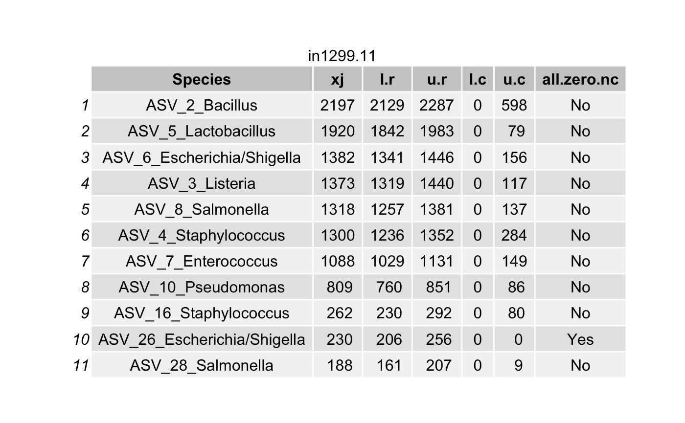
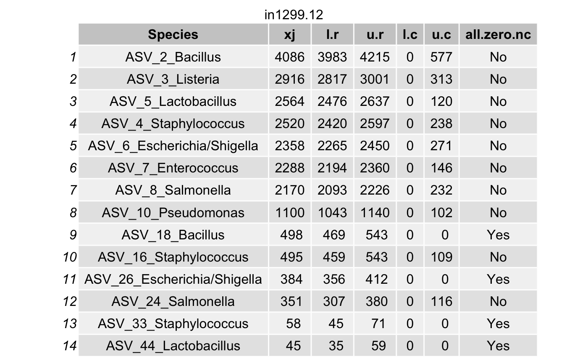
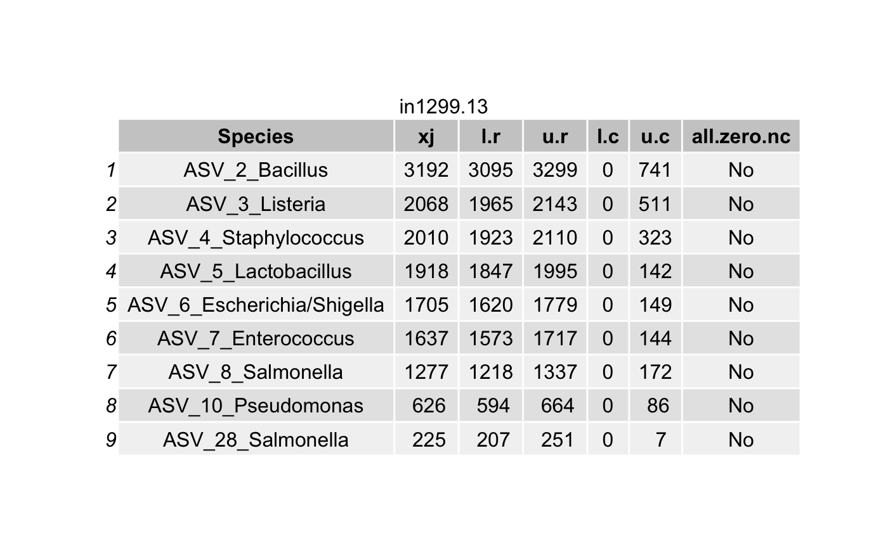
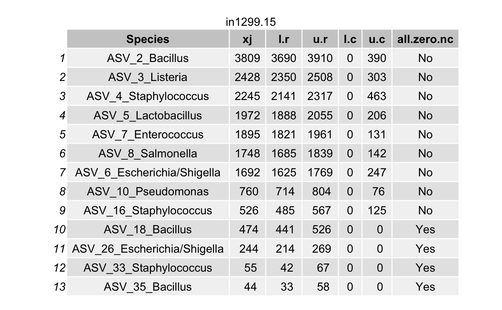
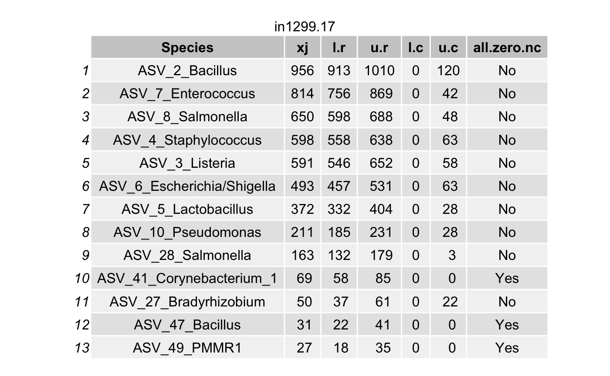
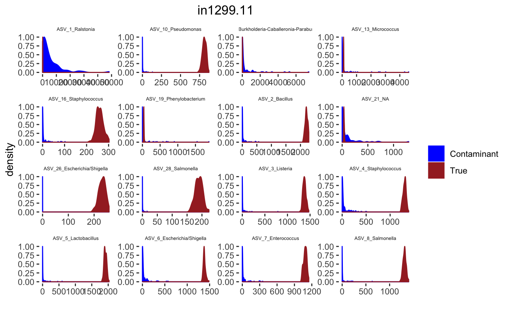
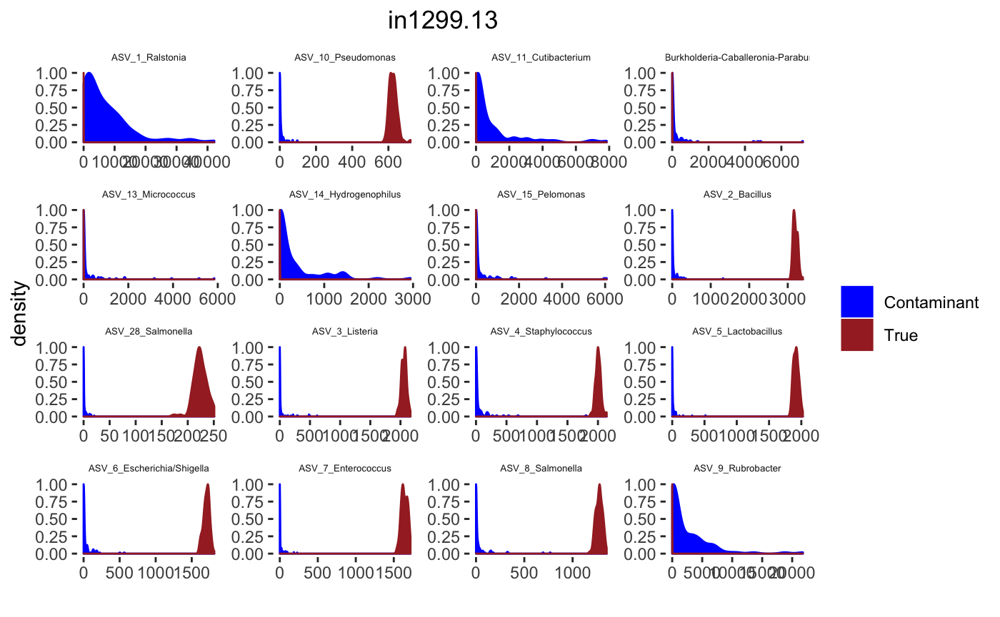
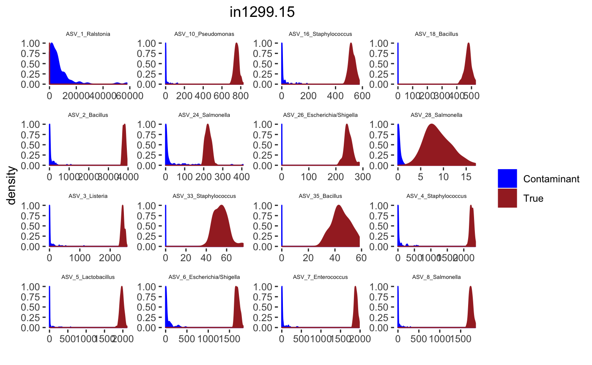
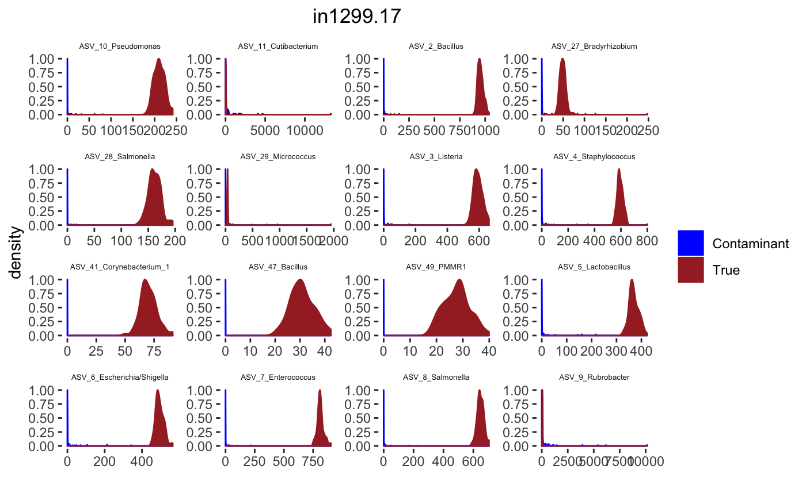
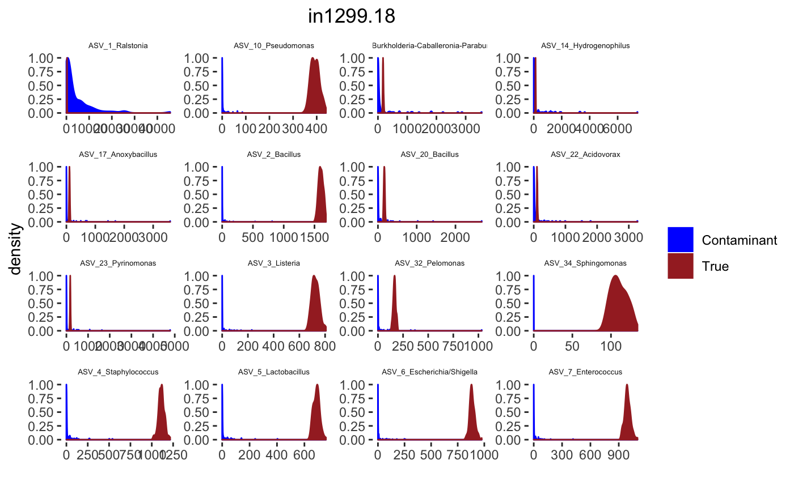

BARBI Workflow
Pratheepa Jeganathan
Department of Statistics, Stanford Universityjpratheepa31@gmail.com
BARBI.RmdAbstract
BAyesian Reference analysis with Background Interference (BARBI) provides a reliable statistical method to remove contaminating bacterial DNA from both high- and low-biomass samples.Install R and RStudio. Open this Rmd rmarkdown file in vignettes folder in RStudio. Then run the following code to install all required packages, including BARBI from Github repository.
pkgs <- c("phyloseq",
"dplyr",
"HDInterval",
"grid",
"gtable",
"gridExtra",
"magrittr",
"ggplot2",
"DESeq2")
if (!requireNamespace("BiocManager")){
install.packages("BiocManager")
}
BiocManager::install(setdiff(pkgs, installed.packages()))
devtools::install_github("PratheepaJ/BARBI")## pillar (1.4.2 -> 1.4.3) [CRAN]
##
## There is a binary version available but the source version is later:
## binary source needs_compilation
## pillar 1.4.2 1.4.3 FALSE
##
##
checking for file ‘/private/var/folders/70/2611_qjd0sdbxlcny0wp4xx40000gn/T/RtmpfYZy68/remotes593f2f6dc0d1/PratheepaJ-BARBI-6e58adf/DESCRIPTION’ ...
✓ checking for file ‘/private/var/folders/70/2611_qjd0sdbxlcny0wp4xx40000gn/T/RtmpfYZy68/remotes593f2f6dc0d1/PratheepaJ-BARBI-6e58adf/DESCRIPTION’
##
─ preparing ‘BARBI’:
##
checking DESCRIPTION meta-information ...
✓ checking DESCRIPTION meta-information
##
─ checking for LF line-endings in source and make files and shell scripts
##
─ checking for empty or unneeded directories
##
─ looking to see if a ‘data/datalist’ file should be added
##
─ building ‘BARBI_0.1.0.tar.gz’
##
## Load packages:
library(BARBI)
library(phyloseq)
library(dplyr)
library(HDInterval)
library(grid)
library(gtable)
library(gridExtra)
library(magrittr)
library(ggplot2)
library(DESeq2)Example dataset
We load an example dataset stored as a phyloseq object in the BARBI package (or use your own data stored as a phyloseq object)
Load the phyloseq object
We validated our the BARBI method for removing DNA contamination using a dilution series of samples of eight known bacterial species in the standard ZymoBIOMICS microbial community (Zymo Research).
We saved this data as phyloseq object in the BARBI package.
Seven rounds of six-fold dilutions from the standard, from 1:1 up to 1:279,936 (\(n_{1} = 8\)), as well as ten negative extraction controls \(n_{2} = 10\), were made.
Then all \(N =18\) specimens were processed and analyzed with the ZymoBIOMICS® Service: Targeted Metagenomic Sequencing (Zymo Research, Irvine, CA), which leverages 16S rRNA gene sequencing.
Specify that the samples are on the columns and taxa are on the rows of otu_table.
Adding blocks/batches
To reduce the batch-effects of contamination, we can specify the block information and analyze each block separately with BARBI.
We highly recommend that you keep track of batch effects (Especially DNA extraction and library prep batches), visualize your data with PCA on ranks, and separate your data into different blocks of necessary.
In the example dataset, all samples are in one block.
Remove taxa not in dilution series samples
Identify the taxa that are not present in at least one dilution series sample and removed them from the phyloseq object. Label these species as contaminants.
ps <- prune_taxa(taxa_sums(ps) > 0, ps)
ps_specimen <- subset_samples(ps,
SampleType %in% c("Standard"))
prevTaxaP <- apply(otu_table(ps_specimen), 1,
function(x){sum(x>0)})
Contaminants1 <- names(prevTaxaP)[prevTaxaP == 0]
ps <- prune_taxa(prevTaxaP > 0, ps)
ps## phyloseq-class experiment-level object
## otu_table() OTU Table: [ 53 taxa and 18 samples ]
## sample_data() Sample Data: [ 18 samples by 5 sample variables ]
## tax_table() Taxonomy Table: [ 53 taxa by 7 taxonomic ranks ]We identified 142 ASVs not is any dilution series samples, and they are classified as contaminants before using BARBI.
We use BARBI to infer true ASVs in each dilution series sample.
Library depth
We check the distribution of sample library depth to see whether there are samples with very small library depth that should be dropped from the analysis.
totalReads <- colSums(otu_table(ps))
hist(log(totalReads),
yaxs="i",
xaxs="i",
main="Distribution of total reads per sample",
breaks=50)We do not need to drop any sample.
BARBI
Prepare the phyloseq object for the BARBI method
We use BARBI to identify contaminants in each block separately. Thus, we split the phyloseq object into multiple phyloseq objects corresponding to each block, and store the phyloseq objects as a list of phyloseq objects, psByBlock.
We select negative control samples from each block and store as a list of phyloseq objects, psNCbyBlock.
We select all taxa that have a prevalence of zero (i.e., have zero reads) in all negative control samples for each block and store as a list of phyloseq objects, psallzeroInNC.
We select all specimen samples from each block and store as a list of phyloseq objects, psPlByBlock.
psBlockResult <- psBlockResults(ps,
sampleTypeVar = "SampleType",
caselevels = c("Standard"),
controllevel = c("Negative"),
sampleName = "sampleID",
blockVar = "block")
psByBlock <- psBlockResult[[1]]
psNCbyBlock <- psBlockResult[[2]]
psallzeroInNC <- psBlockResult[[3]]
psPlByBlock <- psBlockResult[[4]]Estimate the density parameters for the contaminant intensities in negative control samples
Estimate the gamma density parameters for the contaminant intensities using the negative control samples for each block.
\(\lambda_{il}^{(c)} \sim \text{gamma }\left(\frac{1}{\gamma_{i}^{0}},\frac{1}{\gamma_{i}^{0} \mu_{il}^{0}}\right),\) \(l\) is the \(l\)-th negative control.
Estimate the density parameters for the contaminant intensities in each specimen
For each specimen, we estimate the gamma density parameters for the contaminant intensities using the scaling property of the gamma distribution.
\(\lambda_{ij}^{(c)} \sim \text{gamma }\left( \frac{d^{0}_{l} }{d_{j}} \frac{1}{\gamma_{i}^{0}},\frac{1}{\gamma_{i}^{0} \mu_{il}^{0}}\right),\) where \(j\) is the \(j\)-th specimen.
num_blks <- length(con_int_neg_ctrl)
blks <- seq(1, num_blks) %>% as.list
con_int_specimen <- lapply(blks, function(x){
con_int_specimen_each_blk <- alphaBetaContInPlasma(psPlByBlock = psPlByBlock,
psallzeroInNC = psallzeroInNC,
blk = x,
alphaBetaNegControl = con_int_neg_ctrl)
return(con_int_specimen_each_blk)
})Sample from the marginal posterior for the true intensities
For all specimen samples and for all taxa, sample from the posterior for the true intensities using the Metropolis-Hasting MCMC.
We need to specify the number of iterations in the MCMC using the option itera.
Save the gamma prior for the intensity of contamination and the posterior samples.
The suggested itera is 10,000.
itera = 100
t1 <- proc.time()
mar_post_true_intensities <- lapply(blks,function(x){
mar_post_true_intensities_each_blk <- samplingPosterior(psPlByBlock = psPlByBlock,
blk = x,
gammaPrior_Cont = con_int_specimen[[x]],
itera = itera)
return(mar_post_true_intensities_each_blk)
})
proc.time()-t1## user system elapsed
## 6.980 0.115 7.120Make summaries from the BARBI results.
Make tables for each sample
Choose the number of MCMC to be removed using the option burnIn. It must be less than itera.
Choose the coverage probability to construct the highest posterior density (HPD) interval\(\left(L_{ij}^{(r)}, U_{ij}^{(r)}\right)\) (for each taxon \(i\) in a specimen \(j\)) using the option cov.pro for true intensities.
Compute the highest density interval (HDI) for the contaminant intensities \(\left(L_{ij}^{(c)}, U_{ij}^{(c)}\right)\) for each taxon \(i\) in a specimen \(j\).
For a contaminant taxon, the lower limit \(L_{ij}^{(r)}\) will be smaller than the upper limit \(U_{ij}^{(c)}\).
The suggested burnIn is 5000 for itera <- 10,000.
ASV <- as.character(paste0("ASV_",seq(1,ntaxa(ps))))
ASV.Genus <- paste0("ASV_",seq(1,ntaxa(ps)),"_",as.character(tax_table(ps)[,6]))
ASV.Genus.Species <- paste0(ASV,"_",as.character(tax_table(ps)[,6]),"_", as.character(tax_table(ps)[,7]))
df.ASV <- data.frame(seq.variant = taxa_names(ps), ASV = ASV, ASV.Genus = ASV.Genus, ASV.Genus.Species = ASV.Genus.Species)itera <- 100
burnIn <- 10
cov.pro <- .95
mak_tab <- FALSE # Save tables or print tables
# con_int_specimen_mar_post_true_intensities <- readRDS("./con_int_specimen_mar_post_true_intensities_vignettes.rds")
con_int_specimen <- con_int_specimen_mar_post_true_intensities[[1]]
mar_post_true_intensities <- con_int_specimen_mar_post_true_intensities[[2]]
## Keep true
all_true_taxa_blk <- list()
for(blk in 1:num_blks){
mar_post_true_intensities_blk <- mar_post_true_intensities[[blk]]
con_int_specimen_blk <- con_int_specimen[[blk]]
all_true_taxa <- character()
for(sam in 1:nsamples(psPlByBlock[[blk]])){
taxa_post <- mar_post_true_intensities_blk[[sam]]
acceptance <- list()
lower.r <- list()
upper.r <- list()
lower.c <- list()
upper.c <- list()
all.zero.nc <- list()
for(taxa in 1:length(taxa_post)){
burnIn <- burnIn
acceptance[[taxa]] <- 1 - mean(duplicated(taxa_post[[taxa]][-(1:burnIn),]))
HPD.r <- hdi(taxa_post[[taxa]][-(1:burnIn),],
credMass = cov.pro)
lower.r[[taxa]] <- round(HPD.r[1], digits = 0)
upper.r[[taxa]] <- round(HPD.r[2], digits = 0)
lamda.c <- rgamma((itera-burnIn+1),
shape= con_int_specimen_blk[[sam]][[1]][taxa],
rate = con_int_specimen_blk[[sam]][[2]][taxa])
HDI.c <- hdi(lamda.c, credMass = cov.pro)
lower.c[[taxa]] <- round(HDI.c[1], digits = 0)
upper.c[[taxa]] <- round(HDI.c[2], digits = 0)
all.zero.nc[[taxa]] <- con_int_specimen_blk[[sam]][[5]][taxa]
}
tax_names <- taxa_names(psPlByBlock[[blk]])
tax_names <- df.ASV$ASV.Genus[which(as.character(df.ASV$seq.variant) %in% tax_names)]
df <- data.frame(Species = tax_names,
xj = as.numeric(con_int_specimen_blk[[sam]][[3]]),
l.r = unlist(lower.r),
u.r = unlist(upper.r),
l.c = unlist(lower.c),
u.c = unlist(upper.c),
all.zero.nc = unlist(all.zero.nc))
# List all true taxa
df <- arrange(filter(df,(l.r > u.c) & (l.r > 0)),
desc(xj))
# If there is no true taxa
if(dim(df)[1]==0){
df <- data.frame(Species="Negative",
xj="Negative",
l.r="Negative",
u.r="Negative",
l.c ="Negative",
u.c="Negative",
all.zero.nc = "Negative")
}
# collect all true taxa in the specimen
all_true_taxa <- c(all_true_taxa,
as.character(df$Species))
if(mak_tab){
filname <- paste("./",
sample_names(psPlByBlock[[blk]])[sam],
".png",
sep = "")
png(filname, height = 600, width = 750)
df.p <- tableGrob(df)
title <- textGrob(sample_names(psPlByBlock[[blk]])[sam],
gp = gpar(fontsize = 12))
padding <- unit(0.5,"line")
df.p <- gtable_add_rows(df.p,
heights = grobHeight(title) + padding,
pos = 0)
df.p <- gtable_add_grob(df.p,
list(title),
t = 1,
l = 1,
r = ncol(df.p))
grid.newpage()
grid.draw(df.p)
dev.off()
}else{
df.p <- tableGrob(df)
title <- textGrob(sample_names(psPlByBlock[[blk]])[sam],
gp = gpar(fontsize = 12))
padding <- unit(0.5,"line")
df.p <- gtable_add_rows(df.p,
heights = grobHeight(title) + padding,
pos = 0)
df.p <- gtable_add_grob(df.p,
list(title),
t = 1,
l = 1,
r = ncol(df.p))
grid.newpage()
grid.draw(df.p)
}
all_true_taxa <- unique(all_true_taxa)
}
all_true_taxa_blk[[blk]] <- all_true_taxa
}
Construct a phyloseq object with the true taxa
all_true_taxa_blk <- unlist(all_true_taxa_blk)
ASV = df.ASV$seq.variant[which(as.character(df.ASV$ASV.Genus) %in% as.character(all_true_taxa_blk))] %>% as.character()
ps_decon <- prune_taxa(ASV, ps)
ps_decon## phyloseq-class experiment-level object
## otu_table() OTU Table: [ 33 taxa and 18 samples ]
## sample_data() Sample Data: [ 18 samples by 5 sample variables ]
## tax_table() Taxonomy Table: [ 33 taxa by 7 taxonomic ranks ]Histograms
set.seed(10000)
itera <- 100
burnIn <- 10
cov.pro <- .95
num_blks <- length(psByBlock)
# con_int_specimen_mar_post_true_intensities <- readRDS("./con_int_specimen_mar_post_true_intensities_vignettes.rds")
con_int_specimen <- con_int_specimen_mar_post_true_intensities[[1]]
mar_post_true_intensities <- con_int_specimen_mar_post_true_intensities[[2]]
blk <- 1
con_int_specimen_blk <- con_int_specimen[[blk]]
mar_post_true_intensities_blk <- mar_post_true_intensities[[blk]]
sample.names <- sample_names(psPlByBlock[[blk]])
for(j in 1: length(sample.names)){
desired.sample.name <- sample.names[j]
desired.sample.index <- which(sample_names(psPlByBlock[[blk]]) %in% desired.sample.name)
tax_interested <- rownames(sort(otu_table(psPlByBlock[[blk]])[,desired.sample.index],decreasing = TRUE))[c(1:16)]
tax_interested_ind <- which(as.character(taxa_names(psPlByBlock[[blk]])) %in% tax_interested)
tax_names <- taxa_names(psPlByBlock[[blk]])[tax_interested_ind]
tax_names <- df.ASV$ASV.Genus[which(as.character(df.ASV$seq.variant) %in% tax_names)] %>% as.character()
taxa.post <- mar_post_true_intensities_blk[[desired.sample.index]]
burnIn <- burnIn
signal.hist <- taxa.post[tax_interested_ind]
signal.hist <- lapply(signal.hist,function(x){x[-(1:burnIn),]})
signal.df <- data.frame(do.call("cbind", signal.hist))
colnames(signal.df) <- tax_names
signal.df$group <- rep("True", length=dim(signal.df)[1])
bg <- list()
for(ind in 1:length(tax_interested_ind)){
bg[[ind]] <- rgamma((itera-burnIn+1),
shape = con_int_specimen_blk[[desired.sample.index]][[1]][tax_interested_ind[ind]],
rate = con_int_specimen_blk[[desired.sample.index]][[2]][tax_interested_ind[ind]])
}
bg.df <- data.frame(do.call("cbind",bg))
colnames(bg.df) <- tax_names
bg.df$group <- rep("Contaminant", length=dim(bg.df)[1])
bg.signal <- rbind(signal.df, bg.df)
bg.signal$group <- as.factor(bg.signal$group)
bg_sig_long <- tidyr::gather(bg.signal,key="Taxa",
value="Reads",1:(dim(bg.signal)[2]-1))
bg_sig_long$Taxa <- as.factor(bg_sig_long$Taxa)
p <- ggplot(bg_sig_long, aes(x= Reads))+
geom_density(aes(y = ..scaled.., fill = group, color = group)) +
facet_wrap(~Taxa,scales = "free")+
scale_fill_manual(values=c("blue","brown")) +
scale_color_manual(values=c("blue","brown")) +
ggtitle(desired.sample.name)+
theme(plot.title = element_text(hjust = 0.5),
legend.title=element_blank(),
strip.text.x = element_text(size=5),
strip.background = element_blank(),
panel.grid = element_blank(),
panel.background = element_blank()) +
xlab("") +
ylab("density")
print(p)
# fileN <- paste0("./Figures/", desired.sample.name,"_hist",".eps")
# ggsave(fileN, plot = p, width = 10, height = 5, device = "eps")
}
Session Info
## R version 3.6.1 (2019-07-05)
## Platform: x86_64-apple-darwin15.6.0 (64-bit)
## Running under: macOS Mojave 10.14.6
##
## Matrix products: default
## BLAS: /Library/Frameworks/R.framework/Versions/3.6/Resources/lib/libRblas.0.dylib
## LAPACK: /Library/Frameworks/R.framework/Versions/3.6/Resources/lib/libRlapack.dylib
##
## locale:
## [1] en_US.UTF-8/en_US.UTF-8/en_US.UTF-8/C/en_US.UTF-8/en_US.UTF-8
##
## attached base packages:
## [1] parallel stats4 grid stats graphics grDevices utils
## [8] datasets methods base
##
## other attached packages:
## [1] DESeq2_1.26.0 SummarizedExperiment_1.16.0
## [3] DelayedArray_0.12.0 BiocParallel_1.20.0
## [5] matrixStats_0.55.0 Biobase_2.46.0
## [7] GenomicRanges_1.38.0 GenomeInfoDb_1.22.0
## [9] IRanges_2.20.1 S4Vectors_0.24.1
## [11] BiocGenerics_0.32.0 ggplot2_3.2.1
## [13] magrittr_1.5 gridExtra_2.3
## [15] gtable_0.3.0 HDInterval_0.2.0
## [17] dplyr_0.8.3 phyloseq_1.30.0
## [19] BARBI_0.1.0 BiocStyle_2.14.0
##
## loaded via a namespace (and not attached):
## [1] colorspace_1.4-1 ellipsis_0.3.0 rprojroot_1.3-2
## [4] htmlTable_1.13.2 XVector_0.26.0 base64enc_0.1-3
## [7] fs_1.3.1 rstudioapi_0.10 farver_2.0.1
## [10] remotes_2.1.0 bit64_0.9-7 AnnotationDbi_1.48.0
## [13] fansi_0.4.0 codetools_0.2-16 splines_3.6.1
## [16] geneplotter_1.64.0 knitr_1.26 ade4_1.7-13
## [19] pkgload_1.0.2 zeallot_0.1.0 jsonlite_1.6
## [22] Formula_1.2-3 annotate_1.64.0 cluster_2.1.0
## [25] BiocManager_1.30.10 compiler_3.6.1 backports_1.1.5
## [28] assertthat_0.2.1 Matrix_1.2-18 lazyeval_0.2.2
## [31] cli_2.0.0 acepack_1.4.1 htmltools_0.4.0
## [34] prettyunits_1.0.2 tools_3.6.1 igraph_1.2.4.2
## [37] glue_1.3.1 GenomeInfoDbData_1.2.2 reshape2_1.4.3
## [40] Rcpp_1.0.3 pkgdown_1.4.1.9000 Biostrings_2.54.0
## [43] vctrs_0.2.1 multtest_2.42.0 nlme_3.1-142
## [46] ape_5.3 iterators_1.0.12 xfun_0.11
## [49] stringr_1.4.0 ps_1.3.0 testthat_2.3.1
## [52] lifecycle_0.1.0 devtools_2.2.1 XML_3.98-1.20
## [55] zlibbioc_1.32.0 MASS_7.3-51.4 scales_1.1.0
## [58] biomformat_1.14.0 rhdf5_2.30.1 RColorBrewer_1.1-2
## [61] yaml_2.2.0 curl_4.3 memoise_1.1.0
## [64] rpart_4.1-15 latticeExtra_0.6-28 stringi_1.4.3
## [67] RSQLite_2.1.3 genefilter_1.68.0 desc_1.2.0
## [70] foreach_1.4.7 permute_0.9-5 checkmate_1.9.4
## [73] pkgbuild_1.0.6 rlang_0.4.2 pkgconfig_2.0.3
## [76] bitops_1.0-6 evaluate_0.14 lattice_0.20-38
## [79] Rhdf5lib_1.8.0 purrr_0.3.3 labeling_0.3
## [82] htmlwidgets_1.5.1 bit_1.1-14 processx_3.4.1
## [85] tidyselect_0.2.5 plyr_1.8.5 bookdown_0.16
## [88] R6_2.4.1 Hmisc_4.3-0 DBI_1.0.0
## [91] mgcv_1.8-31 pillar_1.4.3 foreign_0.8-72
## [94] withr_2.1.2 survival_3.1-8 RCurl_1.95-4.12
## [97] nnet_7.3-12 tibble_2.1.3 crayon_1.3.4
## [100] rmarkdown_2.0 usethis_1.5.1 locfit_1.5-9.1
## [103] data.table_1.12.6 vegan_2.5-6 blob_1.2.0
## [106] callr_3.4.0 digest_0.6.23 xtable_1.8-4
## [109] tidyr_1.0.0 munsell_0.5.0 sessioninfo_1.1.1